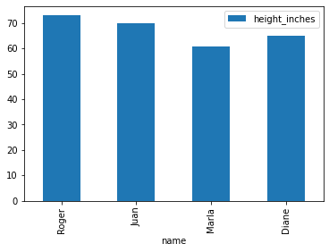

Jupyter NoteBook Starter
Jupyter NoteBook Starter¶
This is a Jupyter notebook example as described in the article Jupyter Notebook: A Complete Introduction. This is a Markdown “cell” (row). You can double-click this cell to view or edit the text. When you’re done editing, type Shift-ENTER to run the cell.
# This is a Python Code Cell. It behaves like the Python terminal,
# so it will display the results of the last expression. You can also use print or other Python functions, or course.
# Double-click on this cell if you want to edit the python code. When you're ready to run it, type Shift-ENTER again.
print(2+2)
message = "Hello from Python"
message
4
'Hello from Python'
Jupyter Notebook supports Graphs using Matplotlib, Seaborn, etc.
For the rest of the notebook, I saved the output so you could see how it looks.
import pandas as pd
from pandas import DataFrame
import matplotlib.pyplot as plt
data = {
'name': ['Roger', 'Juan', 'Marla', 'Diane'],
'age': [27, 32, 40, 16],
'height_inches': [73, 70, 61, 65]
}
df = DataFrame(data)
df
| name | age | height_inches | |
|---|---|---|---|
| 0 | Roger | 27 | 73 |
| 1 | Juan | 32 | 70 |
| 2 | Marla | 40 | 61 |
| 3 | Diane | 16 | 65 |
df.plot(x='name', y='height_inches', kind='bar')
plt.show()
